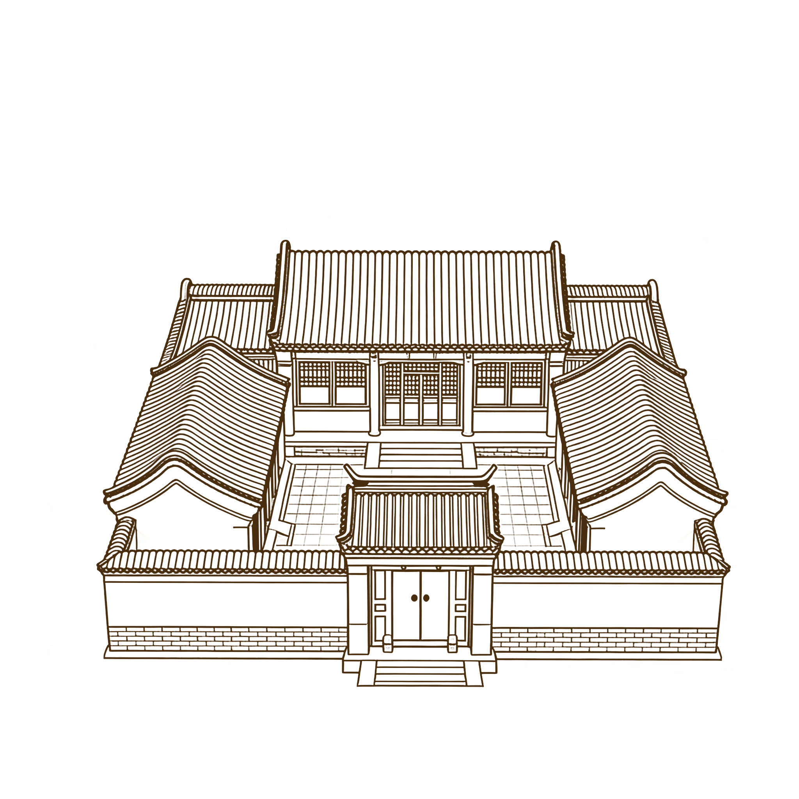
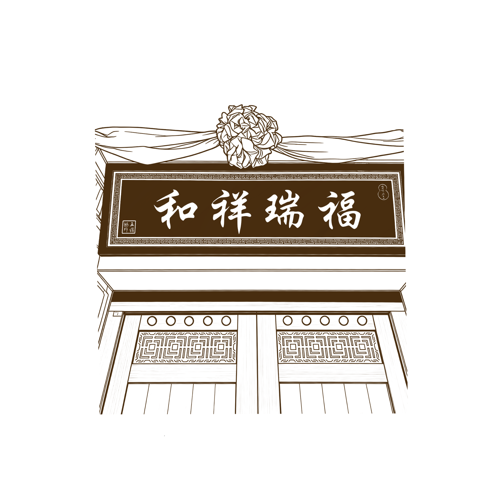

匠作志 · 中国传统民居
返回地图
四合院
装饰简介
北京四合院装饰以 "礼序为骨、吉祥为魂" 为核心，通过砖雕、木雕、石雕、油饰、彩画、匾额楹联六大工艺，在建筑各部位形成完整体系。它既承载祈福镇宅、文人雅趣的精神内涵，又以色彩纹样体现等级礼制，是北方民居 "外简内精、尊卑有序" 居住文化的视觉表达。
装饰信息
装饰类型：砖雕、木雕、石雕、油饰、彩画、匾额 / 对联 / 门神六大类
装饰分布：重点集中于影壁、墀头墙、垂花门、宅门、抱鼓石等对外展示部位。
装饰题材：以吉祥祈福、植物纹样、瑞兽纹样、文人雅趣为主，兼具礼制与驱邪寓意
装饰类型

四合院匾额

四合院匾额是宅第的文化名片，通常悬挂于门楣之上，多以木质或石质制成，题字多出自名家之手，内容或为祈福纳祥（如"福瑞祥和"），或彰显家风志向，兼具标识与教化功能。匾额的形制、字体与装饰也暗含门第等级，是传统建筑中"文以载道"的直观体现，承载着中式美学与家族精神。